Versão 8 · novembro de 2026 · em validação com a Ourofino
Serafina
prazer,
00 · Abertura
Oi! Eu sou a Serafina, promotora da Ourofino Pet há oito anos. Visito petshop, clínica e loja de bairro de segunda a sábado, e vou com você em cada capítulo deste guia.
Guia de execução no PDVPrazer, Serafina“
uma carta antes de começar
Para que serve este guia
No meu primeiro mês, colei um wobbler, a plaquinha que balança na prateleira, na porta do consultório. Ninguém me disse onde ele ia. O veterinário tirou no mesmo dia, e com razão.
Este guia junta o que eu queria ter aprendido antes: o que fazer em cada visita, na mesma ordem, e o porquê de cada regra. Quem entende o porquê decide bem em qualquer loja, mesmo sem ninguém por perto.
Serafinapromotora da Ourofino Pet há oito anos
Guia de execução no PDVPrazer, Serafina
antes da primeira página
Como usar o guia
Seis coisas que ajudam a tirar o melhor do guia, no celular, no treinamento ou no papel.
No celular, na loja
Deite o celular para ver um slide por vez ou role a tela na vertical. Use o Índice para pular direto ao assunto.
No treinamento
Passe do começo ao fim, em cerca de 40 minutos. Cada capítulo abre com uma capa e cabe numa conversa curta.
Em papel
O botão PDF gera um arquivo com uma página por slide, para imprimir ou mandar pelo WhatsApp.
Dica da Serafina
A faixa verde no pé do slide traz o que eu aprendi na prática e ninguém ensina.
Erro comum
Quando eu apareço de mão levantada, vem um erro que eu vejo toda semana nas lojas.
Teste final
No fim, dez situações de loja, uma por capítulo. Pode errar à vontade: cada resposta explica o porquê.
A visita começa antes de você entrar na loja e termina depois que você sai. Seguindo a mesma ordem em toda loja, você esquece menos e a equipe entende o que você veio fazer.
Guia de execução no PDV1 · Contato no PDV: antes, durante e depois
Fig. 1.1 O kit da visita: celular carregado, fita dupla face, flanela, bloco, crachá e etiquetas.
antes de sair
Antes de sair: prepare cada loja da rota
1
Revise o histórico. Abra as fotos e as anotações da última visita. Veja o que a loja tem da Ourofino Pet e o que parou de comprar.
2
Liste as pendências. O que você prometeu levar ou responder e o que ficou sem solução: falta, preço, material quebrado.
3
Defina um objetivo. Uma meta curta, que dê para ver na foto do fim da visita. “Banni 3 com preço” serve. “Dar uma geral” não, porque ninguém consegue conferir.
4
Separe o material. Só as peças desta loja e da campanha atual, sem dobra nem sujeira. Leve fita dupla face, flanela, caneta e bloco.
5
Monte a rota. A ordem das lojas, o tempo em cada uma e o horário em que cada loja prefere receber você.
Guia de execução no PDV1 · Contato no PDV: antes, durante e depoisentrada da lojaaté a próxima visita
na loja
Na loja: oito passos, sempre nesta ordem
1Chegue e se apresente
Espere o atendimento acabar. Diga nome, empresa, o que veio fazer e quanto tempo leva.
2Olhe a loja toda
Antes de mexer, dê uma volta: farmácia (remédios), ração, higiene, caixa e, com licença, o estoque.
3Fotografe antes
A prateleira inteira, de frente, a dois passos de distância, sem pessoas na foto.
4Corrija o básico
Falta, limpeza, preço e validade, em ordem. Depois, caixas viradas para o corredor.
5Faça o objetivo do dia
Material novo ou produto em outro ponto da loja, só com a prateleira em ordem.
6Converse com a equipe
Num momento sem cliente, passe uma informação útil ao balconista. Uma por visita basta.
7Fotografe depois
Do mesmo lugar, na mesma altura e no mesmo ângulo da foto de antes.
8Encerre com o responsável
Conte o que fez, o que ficou pendente e quando volta. Agradeça.
Guia de execução no PDV1 · Contato no PDV: antes, durante e depois
roteiro da chegada
A chegada, palavra por palavra
Você
Bom dia! Eu sou a [seu nome], promotora da Ourofino Pet.
Você
Hoje vim organizar a prateleira de antipulgas e vermífugos e conferir os preços. Levo uns 40 minutos.
Você
Com quem eu falo antes de começar? Posso trabalhar agora ou você prefere outro horário?
Balconista
Pode começar. A gerente está lá nos fundos.
Você
Obrigada. Onde eu deixo a bolsa e as caixas?
Lembre-seVocê está na casa de alguém. Primeiro se apresenta, depois olha, e só então mexe no produto.
depois da visita
Depois: o registro prepara a próxima visita
Uma falta que ninguém registrou continua na prateleira, porque ninguém soube dela.
1Registre no mesmo dia
Ainda no carro ou no ponto de ônibus, anote faltas, preços e o que combinou, loja por loja.
2Anexe as fotos
Antes e depois, do mesmo ângulo, com nome da loja e data. Apague as que mostram pessoas.
3Avise o supervisor
O que não depende de você: falta repetida sem estoque, produto vencido, loja que não deixou trabalhar, pedido de preço ou prazo.
4Deixe a próxima pronta
Escreva o objetivo da próxima visita e o que você prometeu levar ou responder.
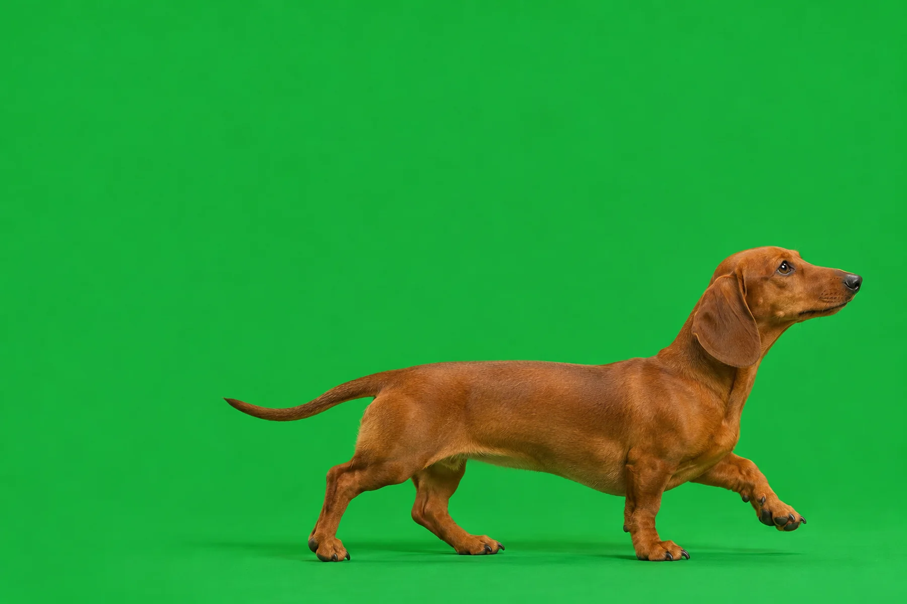
02Capítulo 2O trabalho4 min de leitura
o que é trade
O que é trade marketing
Trade marketing é o trabalho que faz o produto ser encontrado, entendido e escolhido dentro da loja. Na loja pet, quem faz isso na rotina é você.
Guia de execução no PDV2 · O que é trade marketing
76%
Em supermercados dos Estados Unidos, 76% das decisões de compra foram tomadas dentro da loja.1
por que importa
Por que a venda se decide na frente da prateleira
O tutor entra na loja com uma necessidade: o cachorro está com pulga, o gato precisa de vermífugo. A marca, muitas vezes, ele escolhe ali, olhando a prateleira ou ouvindo o balconista.
Trade marketing cuida desse momento. O produto precisa estar lá, à vista, com preço, perto do que o tutor procura, e o balconista precisa saber falar dele. A promotora que vai à loja só no sábado ajuda, mas quem garante isso no resto da semana é a visita bem feita.
1 Fonte: POPAI, 2012 Shopper Engagement Study, com 2.400 compradores entrevistados antes e depois das compras.
Guia de execução no PDV2 · O que é trade marketing
o caminho do produto
O caminho do produto até a casa do tutor
A Ourofino fabrica e vende ao distribuidor. O distribuidor vende à loja: isso é o sell-in. A loja vende ao tutor: isso é o sell-out.
O pedido da loja só se repete quando o produto sai da prateleira. Por isso o seu foco é o sell-out: produto esquecido no fundo da gôndola, a estante da loja, não vende, e a loja não volta a comprar.
Ourofinofabrica o produto
abastece
Distribuidorcompra, estoca e entrega
sell-in
Lojaexpõe, orienta e vende
sell-out
Tutorleva para casa e cuida do pet
Na prática. Loja com 10 caixas de Top Dog paradas na prateleira de baixo comprou, mas não vendeu. Ali, o seu trabalho é fazer o produto aparecer.
Guia de execução no PDV2 · O que é trade marketingAa
pequeno dicionário do trade
As palavras do trade que você vai ouvir
Sell-ins.m., do inglês
A venda do distribuidor para a loja. Aparece no pedido.
Sell-outs.m., do inglês
A venda da loja para o tutor. Aparece na prateleira vazia que precisa de reposição.
Giros.m.
A velocidade com que o produto sai da prateleira. Produto com giro alto pede reposição frequente.
Mixs.m., do inglês
Os produtos da marca que a loja tem à venda. Anote o que ela tem, o que parou de comprar e o que nunca teve.
Rupturas.f.
O buraco na prateleira onde deveria estar o produto. O tutor não acha e leva outra marca.
PDVsigla de ponto de venda
A loja, a clínica, o balcão onde o tutor compra. Material de PDV é tudo o que sinaliza o produto ali.
03Capítulo 3Na gôndola7 min de leitura
na gôndola
O básico da gôndola
O básico é a prateleira com produto, limpa, com preço e na validade. Vem antes de qualquer material: é o que o tutor vê primeiro e o que mais pesa na escolha.
Guia de execução no PDV3 · O básico da gôndola
o custo da falta
Por que um buraco na prateleira custa mais que uma venda
Quando o tutor não acha o produto, ele resolve na hora: leva outra marca, compra em outra loja ou desiste. A venda perdida hoje pode virar o hábito de comprar a concorrente amanhã.
A maior parte das faltas nasce dentro da loja: pedido mal calculado ou caixa esquecida no estoque. Por isso, antes de anotar a falta, pergunte se tem produto guardado. Se tiver, peça licença e reponha. Se não tiver, registre e avise o supervisor.
1 Fonte: Gruen, Corsten e Bharadwaj, “Retail Out-of-Stocks”, estudo da FMI, GMA e CIES com 71 mil consumidores em 29 países, 2002.
Quando o produto falta na prateleira, a cada 100 compradores:1
31vão comprar em outra loja
26levam outra marca
19levam outro produto da mesma marca
15adiam a compra
9não compram nada
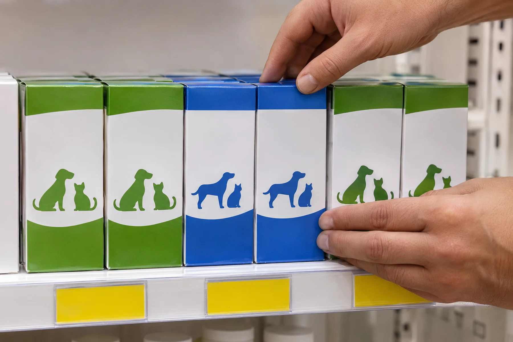
na gôndola
O básico: 4 coisas para conferir
1Disponível
O produto está na prateleira, sem buraco. A falta se chama ruptura: o tutor não acha e leva outra marca.
2Limpo
Embalagem sem poeira, sem amassado e sem etiqueta velha por cima. Caixa suja parece produto parado.
3Com preço
Etiqueta embaixo do produto certo, legível de longe. Sem preço, o tutor precisa perguntar, e nem sempre há quem responda.
4Na validade
Nada vencido à venda. O que vence antes vai na frente, para sair primeiro.
Guia de execução no PDV3 · O básico da gôndola
validade
FIFO: a validade mais curta vai na frente
FIFO vem do inglês first in, first out: o primeiro que entra é o primeiro que sai. Ao repor, puxe para a frente as caixas que vencem antes e coloque o lote novo atrás.
Se a caixa nova fica na frente, a antiga vai para o fundo e vence lá. Produto vencido à venda é crime pelo Código de Defesa do Consumidor. Achou um? Tire da prateleira na hora e entregue ao responsável da loja.
1 Fonte: Lei 8.078/1990 (Código de Defesa do Consumidor), art. 18, § 6º; Lei 8.137/1990, art. 7º, inciso IX.
Fig. 3.3 Ao repor, a caixa que vence antes vai para a frente.
Guia de execução no PDV3 · O básico da gôndola
frente e bloco
Frente e blocagem: a marca vista de longe
Frente é cada caixa virada para o corredor, com o nome à vista. Blocagem é juntar as caixas da mesma linha de produto num bloco só, de cima para baixo, em vez de espalhar caixas pela gôndola.
Um bloco é mais fácil de achar do que cinco caixas soltas. Num teste que rastreou o olhar dos compradores, com o dobro de frentes a marca foi notada 28% mais vezes.
+28%mais vezes a marca foi notada com o dobro de frentes1
1 Fonte: Chandon, Hutchinson, Bradlow e Young, “Does In-Store Marketing Work?”, Journal of Marketing, 2009.
Guia de execução no PDV3 · O básico da gôndola
as três alturas
As três alturas da gôndola
O olhar do tutor cai primeiro na faixa entre o peito e os olhos, de 1,20 m a 1,60 m do chão. É a zona quente: ali ficam o que mais sai e a campanha do momento.
Acima dela, a prateleira ainda é vista. Abaixo de 0,80 m, o tutor precisa se abaixar para ver. Num teste com 348 compradores, a marca nas duas prateleiras de cima foi escolhida 12% mais vezes do que nas duas de baixo.
1 Fonte: Chandon, Hutchinson, Bradlow e Young, “Does In-Store Marketing Work?”, Journal of Marketing, 2009.
acima de 1,60 mvista, mas pede esforço
1,20 m a 1,60 monde o olhar cai primeiro
0,80 m a 1,20 mao alcance da mão
abaixo de 0,80 mo tutor precisa se abaixar
chão
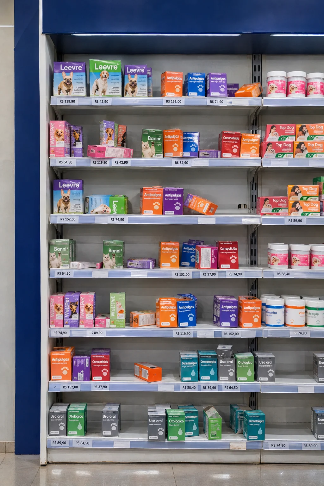
AntesDepois
arraste para comparar
A mesma gôndola antes e depois da visita
Arraste a linha para comparar. Antes: buraco na prateleira, caixas deitadas, preço faltando e marcas misturadas. Depois: cada linha num bloco, frentes viradas para o corredor, preço embaixo de cada produto e a validade mais curta na frente.
Nenhum material novo entrou na foto de depois. A diferença vem só do básico bem feito.
Lembre-se. Fotografe antes e depois do mesmo lugar e na mesma altura. É assim que o seu trabalho aparece.
04Capítulo 4Na gôndola5 min de leitura
materiais
Materiais de PDV
Material de PDV é toda peça que sinaliza o produto dentro da loja. Ele trabalha junto com o produto: longe dele, confunde o tutor.
Guia de execução no PDV4 · Materiais de PDV
materiais de prateleira
Na gôndola: seis materiais de prateleira
Cada peça tem um lugar e uma função. Longe do produto, nenhuma delas funciona.
1Wobbler
Peça que balança presa à prateleira, bem junto do produto. Um por produto, sem cobrir embalagem nem preço.
2Stopper
Placa que sai da prateleira em direção ao corredor e faz quem passa parar e olhar. Vai no começo do bloco da marca.
3Testeira
Placa no alto da gôndola que dá nome à área, como farmácia ou proteção. Fica acima do bloco, sem tapar a luz.
4Régua de gôndola
Faixa encaixada na frente da prateleira, na altura do preço. Não pode cobrir a etiqueta da loja.
5Clip strip
Fita pendurada com produtos presos, ao lado da gôndola ou em outra área. Leva o produto até outra área e ajuda na compra por impulso.
6Cartaz
Peça de parede para campanha ou informação. Fica perto da área do produto, na altura dos olhos, e sai quando a campanha acaba.
Guia de execução no PDV4 · Materiais de PDV
fora da prateleira
No balcão, no corredor e no chão
7
8
9
10
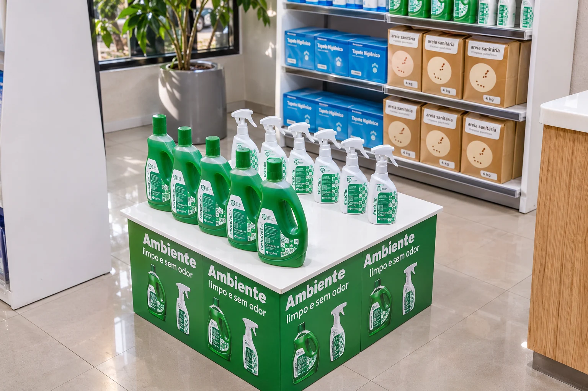
11
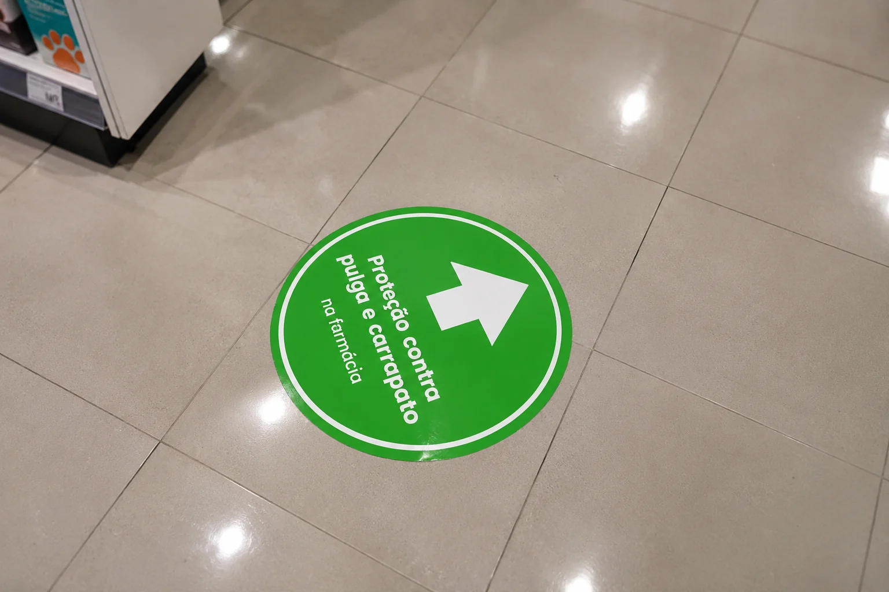
Display de balcão
Pequeno expositor ao lado do caixa ou do balcão da farmácia. Só funciona abastecido.
Take one
Porta-folhetos para o tutor levar para casa, como o calendário de vermifugação. Fica no balcão, sempre com folheto.
Display de chão
Expositor de pé no corredor. É um ponto extra, um lugar a mais fora da prateleira: só com ela cheia.
Ilha
Expositor no meio da loja, visto de todos os lados. Pede espaço livre e passagem para o tutor.
Adesivo de chão
Seta ou marcação no piso que leva o tutor até a área do produto. Nunca em rampa, degrau ou saída de emergência.
Guia de execução no PDV4 · Materiais de PDV
na clínica
Na clínica: o caminho do tutor
Na clínica, o tutor passa duas vezes pela recepção: quando chega e quando sai. Na saída, ele paga a consulta e leva o que o veterinário indicou.
Por isso a farmácia perto da recepção é o melhor lugar para o produto e para o material.
1
Recepção. Display de balcão e take one com folheto, como o calendário de vermifugação.
2
Sala de espera. Cartaz na parede, na altura dos olhos. O tutor fica ali parado, esperando a vez.
3
Farmácia da clínica. Produto em bloco na prateleira, com wobbler ou régua junto. É ali que o tutor compra na saída.
4
Área de petshop. Material de cross perto da ração e dos acessórios, quando a clínica tem petshop.
✕
Consultório. É do veterinário. Material só entra se ele pedir.
Lembre-se. Na clínica, quem autoriza o material é o veterinário responsável. Peça antes de colocar qualquer peça.
Fig. 4.3 A planta é um exemplo. Em cada clínica, siga o caminho que o tutor faz.
Guia de execução no PDV4 · Materiais de PDV
erro comum
O wobbler na porta do consultório
O que acontece
O promotor instala o material onde sobra espaço: porta do consultório, vidro da vitrine, frente do extintor, em cima do preço. O material fica longe do produto ou atrapalha a loja, e alguém tira no mesmo dia.
Faça assim
Antes de instalar, peça licença a quem autoriza e responda três perguntas. O material está junto do produto que anuncia? Deixa a embalagem e o preço à vista? É da espécie certa, cão na área de cão e gato na área de gato?
Lembre-se. Material demais também atrapalha. Um bom material perto do produto vale mais que três espalhados.
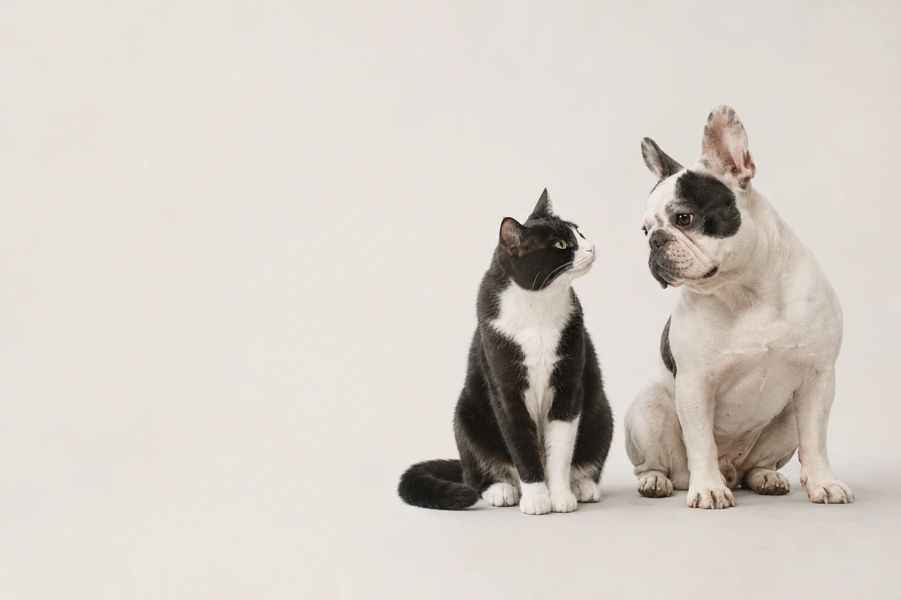
05Capítulo 5Na loja toda5 min de leitura
cruzar
Cross merchandising e cross selling
Cross quer dizer cruzar. Você põe o material de um produto na área onde está o tutor que precisa dele, ou junta dois produtos que resolvem a mesma necessidade.
Guia de execução no PDV5 · Cross merchandising e cross selling
cruzar
Dois tipos de cross e como achar o seu
termo do tradeCross merchandising
Material de um produto em outra área da loja, onde está o tutor que precisa dele. Wobbler do Banni 3 na ração de gato, apontando para o balcão.
termo do tradeCross selling
Venda de um produto junto com outro, pela conversa ou pela exposição. Quem leva o vermífugo Top Dog ouve falar do Herbalvet T.A. para o ambiente.
como achar o cross
Pare numa área da loja e pergunte: o que o tutor está fazendo aqui? Do que mais ele vai precisar? A resposta aponta o produto.
o teste da frase
Explique o par numa frase curta. “Quem compra areia tem gato em casa” passa no teste. Se você precisar de duas frases, o cross é fraco.
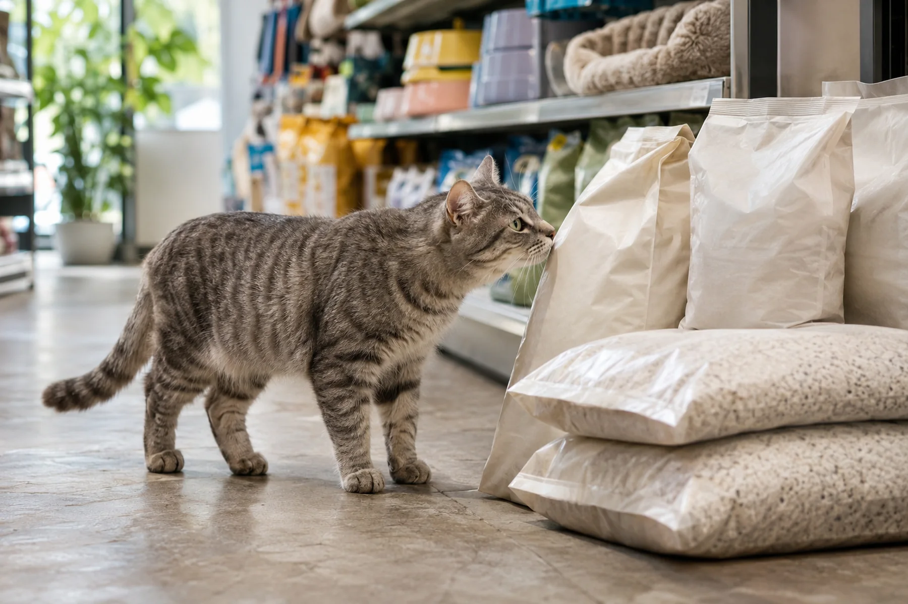
Fig. 5.1 Quem compra areia tem gato em casa: o lugar certo para lembrar do Banni 3.
Guia de execução no PDV5 · Cross merchandising e cross selling
onde cruzar
O mapa dos cruzamentos
Cada seta sai de uma área da loja e chega ao produto que o tutor dali vai precisar. O material vai na área de origem. O produto continua no lugar dele, na farmácia ou na higiene, com estoque e preço.
Produto perto de produto que combina vende mais. Em supermercados dos Estados Unidos, salgadinho e refrigerante expostos frente a frente no corredor venderam mais de 9% a mais por semana.
1 Fonte: Bezawada, Balachander, Kannan e Shankar, “Cross-Category Effects of Aisle and Display Placements”, Journal of Marketing, 2009.
Arraste para o lado para ver a planta inteira.
Cross merchandisingo material fica na área e leva o tutor até a farmácia
Cross sellingprodutos que combinam, oferecidos juntos
1Ração de cão material de WellPET e de Plenipil (para pele sensível)
2Coleiras e guias material de WellPET
3Ração de gato material de Banni 3
4Top Dog + Herbalvet T.A. vermífugo para o cão e desinfetante para o ambiente onde ele vive
5EnziClim + Herbalvet T.A. os dois cuidam do ambiente, lado a lado na gôndola
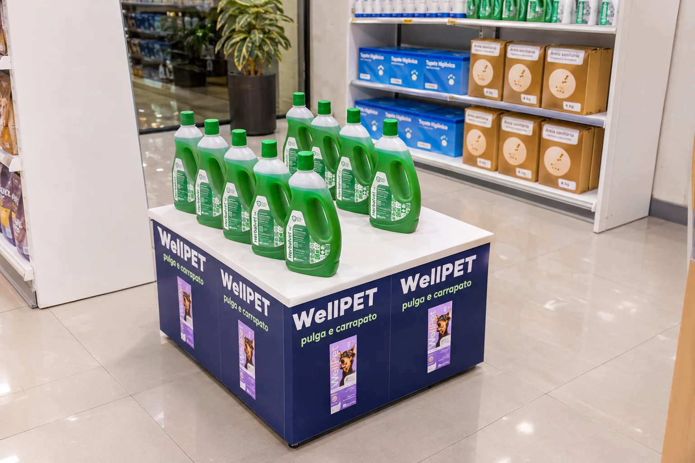
erro comum
O erro do carnaval
Carnaval é quando a vontade de fazer cross espalha material sem lógica pela loja: antipulga de cão na ração de gato, wobbler de suplemento na área de brinquedo, três peças disputando a mesma prateleira.
O tutor não entende o que cada peça quer dizer, e o material vira ruído. Antes de instalar, faça o teste da frase. Se o par não se explica numa frase, ou se a espécie não bate, o material volta para a caixa.
Lembre-se. Material de cão nunca vai para a área de gato, e o de gato nunca vai para a área de cão.
06Capítulo 6Na loja toda3 min de leitura
ponto extra
Ponto natural e ponto extra
Ponto natural é o lugar fixo do produto na gôndola. Ponto extra é um segundo lugar, fora dela. O segundo só existe com o primeiro cheio.
Guia de execução no PDV6 · Ponto natural e ponto extra
certo e errado
O ponto extra que esvazia a gôndola
Arraste a linha para comparar. No errado, o promotor tirou os frascos da gôndola para encher o display. O tutor que vai direto à farmácia, como faz toda semana, encontra o buraco e acha que a loja não tem o produto.
No certo, a gôndola continua cheia, e o display recebe só o estoque que sobrou. Ponto extra bem montado vende: num supermercado do Reino Unido, o café exposto no fim do corredor vendeu 73,5% mais.
+73,5%a mais de vendas para o café exposto no fim do corredor1
1 Fonte: Nakamura e outros, Social Science & Medicine, 2014, com as vendas semanais de 2010 e 2011.
Gôndola cheiao ponto natural continua abastecidoEstoque extra no display
Buraco na gôndolao produto saiu do ponto naturalDisplay cheio
ErradoCerto
Guia de execução no PDV6 · Ponto natural e ponto extra
passo a passo
Como montar um ponto extra sem esvaziar a gôndola
1Complete a gôndola
Todas as frentes cheias, com preço e com a validade mais curta na frente.
2Veja o que sobrou
Confira no estoque, ou pergunte ao balconista, quanto produto a loja tem a mais.
3Monte com a sobra
O ponto extra recebe só esse estoque, com preço à vista e perto do caminho do tutor.
4Fotografe os dois
Gôndola cheia e ponto extra na mesma visita. A foto mostra que um não esvaziou o outro.
5Combine a reposição
Avise o balconista que o ponto extra também precisa ser reposto até a sua próxima visita.
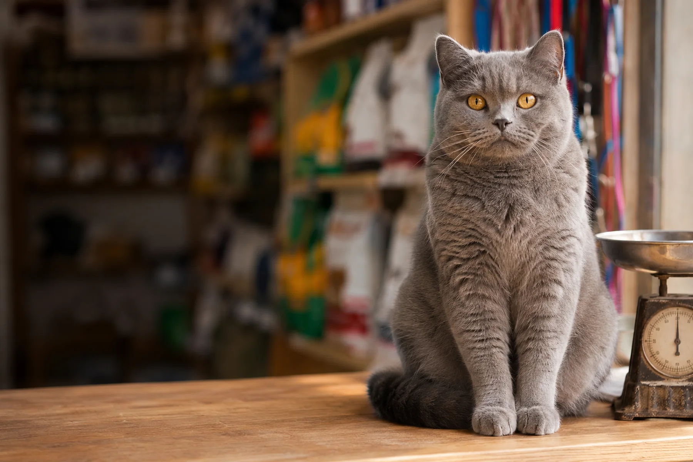
07Capítulo 7As pessoas6 min de leitura
na casa dos outros
Relacionamento, postura e quem decide
A loja deixa você mexer na prateleira dela. Essa confiança se ganha visita a visita, com o jeito de chegar, de trabalhar e de ir embora.
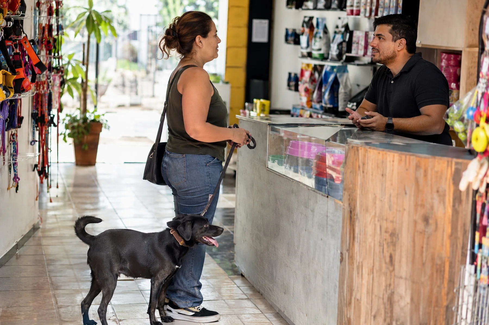
na casa dos outros
Você é convidado na loja
1Espere a pausa
Com tutor no balcão, você aguarda. Chegue perto quando o atendimento acabar, nunca no meio da venda.
2Peça licença
Para mexer na gôndola, entrar no estoque e instalar material. A pergunta leva dez segundos.
3Fique fora do caminho
Caixas e bolsa no canto que a loja indicar, longe do corredor e do caixa.
4Uma informação por visita
O balconista ouve várias marcas no mesmo dia. Uma informação clara, ligada a um pedido comum do tutor, é a que ele lembra.
5Treino e arrumação separados
Arrume a gôndola em silêncio. Fale com o balconista num momento sem cliente, olhando para ele.
6Saia melhor do que entrou
Área arrumada, caixas vazias recolhidas e o responsável sabendo o que você fez.
Guia de execução no PDV7 · Relacionamento, postura e quem decide
o que o lojista diz
Três frases que você quer ouvir da loja
“
O que você combina, acontece.
Confiança
Volte no dia marcado e traga o material prometido. Prometa só o que depende de você. Entrega, preço e prazo vão para o supervisor.
“
Quando eu pergunto, você volta.
Rapidez de resposta
Não sabe? Diga que não sabe, marque o dia e volte com a resposta oficial, mesmo que seja para dizer que ainda está vendo.
“
Vale a pena receber você.
Reconhecimento
Cada visita deixa algo útil. Lembre o nome das pessoas e elogie algo concreto: “a higiene ficou fácil de achar” diz mais que “tá tudo lindo”.
Guia de execução no PDV7 · Relacionamento, postura e quem decide
quem decide
Quem decide em cada tipo de loja
Decisão
Petshop
Petshop com clínica
Clínica com petshop
Mexer na gôndola
Gerente
Gerente
Recepção ou administrador
Instalar material
Gerente ou dono
Gerente
Veterinário responsável
Indicar produto ao tutor
Balconista
Balconista e veterinário
Veterinário
O que a loja compra
Dono ou comprador
Dono
Veterinário ou administrador
Lembre-se. Quem atende no balcão nem sempre é quem autoriza. Na primeira visita, pergunte quem decide cada coisa.
Fig. 7.3 Na clínica, quem autoriza material e indica produto é o veterinário.
Guia de execução no PDV7 · Relacionamento, postura e quem decide
postura em campo
Postura em campo
Sempre
Uniforme limpo e crachá à vista desde a porta
Celular só para foto, registro e consulta ao guia
Foto só da gôndola, sem cliente nem funcionário no quadro
Subir só na escada da loja e pedir ajuda com caixa pesada
Nunca
Entrar no estoque ou no depósito sem autorização
Discutir com funcionário ou com cliente, por qualquer motivo
Falar da marca concorrente, bem ou mal
Deixar produto vencido na prateleira para resolver depois
Lembre-se. Conflito na loja? Saia da conversa com educação e avise o supervisor no mesmo dia.
08Capítulo 8O produto7 min de leitura
como falar
CBV e produtos heróis
Os produtos heróis são os sete da Ourofino Pet que vêm antes de tudo na visita. De cada um, você sabe o que é, onde fica e a frase que o balconista repete ao tutor.
como falar
CBV: característica, benefício e vantagem
Característica é o que o produto é. Pergunte “e daí?” até chegar ao benefício, o que muda para o pet e o tutor: é a frase que o balconista repete. Vantagem é o motivo para escolher este produto.
Na prática. Fale de produto com o balconista e deixe o caso de cada animal para o veterinário.
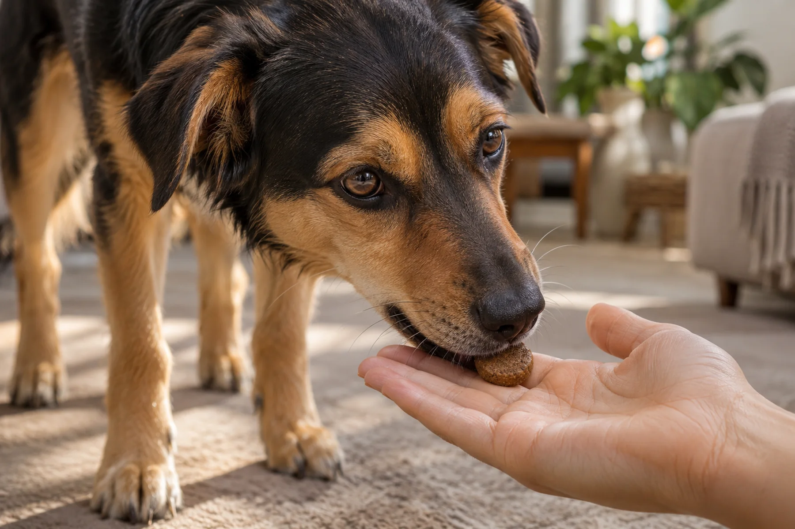
CCaracterísticao que o produto é
Comprimido palatável para cães.
e daí?
BBenefícioo que muda para o pet e o tutor
O cão aceita como petisco, e o tutor dá sem briga.
e daí?
VVantagempor que escolher este
Um comprimido protege por até 45 dias.
Guia de execução no PDV8 · CBV e produtos heróis
produtos heróis
Prevenção e proteção
Os quatro que protegem o pet de parasitas.
CãesWellPET
Comprimido palatável contra pulga e carrapato, com até 45 dias de proteção. Fica na farmácia, com os antiparasitários de cão.
No balcão“É um comprimido que o cão aceita como petisco e que protege por até 45 dias.”
GatosBanni 3
Spot on, líquido pingado na pele da nuca, contra vermes redondos e chatos, pulgas, piolhos e sarnas. Fica na farmácia, na área de gato.
No balcão“Para gato que não aceita comprimido: aplica na nuca e junta várias proteções num produto só.”
CãesTop Dog
Vermífugo em comprimido palatável, contra vermes redondos e chatos e indicado também para giardíase. Fica com os vermífugos de cão.
No balcão“Tem sabor que o cão gosta e também é indicado para giárdia.”
CãesLeevre
Coleira que auxilia no controle de pulga e carrapato e na repelência ao mosquito transmissor da leishmaniose. Em dois tamanhos, por porte.
No balcão“Ajuda no controle de pulga e carrapato e também a repelir o mosquito da leishmaniose.”
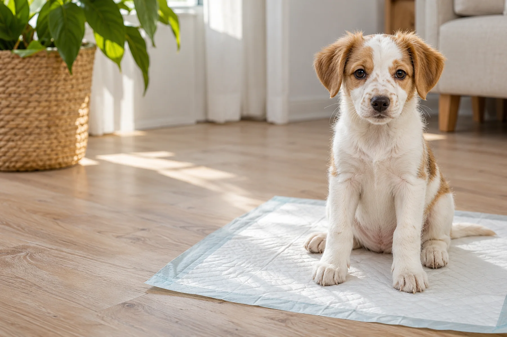
Fig. 8.3 Filhote aprendendo a usar o tapete: a hora do EnziClim.
produtos heróis
Desinfecção e suplemento
AmbienteHerbalvet T.A.
Desinfetante bactericida, fungicida, protozoaricida e viricida, desodorizante, biodegradável e não corrosivo. Fica na higiene do ambiente.
No balcão“Desinfeta e tira o cheiro do canto do pet, e é usado em clínicas veterinárias.”
AmbienteEnziClim
Microrganismos vivos que agem contra odor e mancha de urina, fezes e vômito. Fica lado a lado com o Herbalvet T.A.
No balcão“Para filhote aprendendo a usar o tapete: age no cheiro e na mancha do xixi fora do lugar.”
CãesPlenipil
Tablete mastigável com ômega 3 (EPA e DHA), vitamina A, biotina e selênio, para pele e pelo. Fica com os suplementos de cão.
No balcão“O cão come como petisco, com ômega 3 e outros nutrientes para a pele e o pelo.”
o limite da conversa
O que você pode e o que não pode dizer
Pode
Contar o que o produto é, com as palavras da embalagem e do material oficial
Explicar o benefício e a vantagem como estão no CBV aprovado
Mostrar onde o produto fica e como reconhecer a embalagem
Encaminhar dúvida de uso para o veterinário ou para a bula
Não pode
Dizer quanto dar, de quanto em quanto tempo ou por quanto tempo usar
Dizer que o produto serve para o caso de um animal específico
Prometer resultado, como “acaba com a pulga em um dia”
Falar da marca concorrente para valorizar a Ourofino
Lembre-se. Dúvida sobre um animal específico é do veterinário, mesmo quando você acha que sabe a resposta.
09Capítulo 9O produto12 min de leitura
produto por produto
Os 10 de cada categoria
Trinta e três produtos da Ourofino Pet, nas categorias do site da marca. Cada um tem a sua ficha de característica, benefício e vantagem, pronta para o balcão.
Guia de execução no PDV9 · Os 10 de cada categoria
antes das fichas
Como ler as fichas
Cada produto ganha uma ficha com as três frases do CBV que você aprendeu no capítulo 8. Leia de cima para baixo: o que o produto é, o que muda para o pet e o tutor, e por que escolher este. Os nomes difíceis da primeira frase, como fluralaner, são as substâncias do produto. Servem para conferir a embalagem e a receita.
As categorias seguem o site da Ourofino Pet. Três delas têm menos de dez produtos no portfólio, e aí entram todos. Os testes de diagnóstico Conclue ficam na clínica e não aparecem aqui.
herói produto do capítulo 8 com receita medicamento: sai com orientação do veterinário
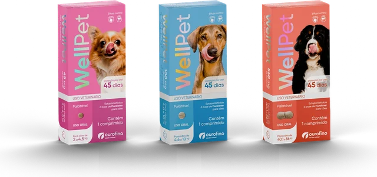
A embalagem, como está na loja
WellPETCãesheróiNome, espécie e selo
CCaracterística
Comprimido palatável de fluralaner contra pulga e carrapato.
O que o produto é
BBenefício
O cão aceita como petisco, e o tutor dá sem briga.
O que muda para o pet e o tutor
VVantagem
Um comprimido protege por até 45 dias.
Por que escolher este
Guia de execução no PDV9 · Os 10 de cada categoria
categoria
Prevenção e proteção
Os antiparasitários e o vermífugo. Ficam na farmácia, com cão de um lado e gato do outro.
Combo Banni 3 (3 flaconetes) e Combo NEOPet (3 pipetas) são os mesmos produtos em caixa com três.
06produtos
WellPETCãesherói
C
Comprimido palatável de fluralaner contra pulga e carrapato.
B
O cão aceita como petisco, e o tutor dá sem briga.
V
Um comprimido protege por até 45 dias.
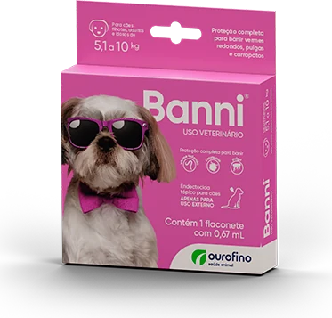
BanniCães
C
Spot on de fipronil e moxidectina, aplicado entre a nuca e as escápulas.
B
Num flaconete só, trata pulga, carrapato e vermes intestinais.
V
Serve para filhote, adulto e idoso, em cinco faixas de peso.
Banni 3Gatosherói
C
Spot on com praziquantel, moxidectina e fipronil, feito para gatos.
B
Para gato que não aceita comprimido, a proteção vai na pele.
V
Um produto só contra vermes redondos e chatos, pulgas, piolhos e sarna de ouvido.
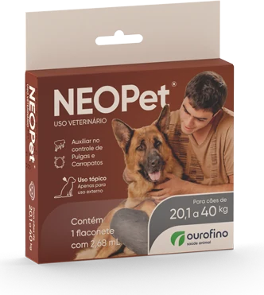
NEOPetCães e gatos
C
Spot on de fipronil contra pulga em cães e gatos e carrapato em cães.
B
Cão e gato da mesma casa usam a mesma marca.
V
No Combo NEOPet, 3 pipetas dão 3 meses de proteção.
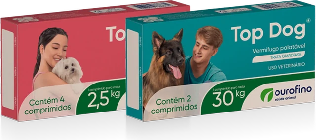
Top DogCãesherói
C
Vermífugo em comprimido palatável contra vermes redondos e chatos.
B
Tem sabor que o cão gosta, e a vermifugação fica mais fácil para o tutor.
V
Também é indicado para giardíase.
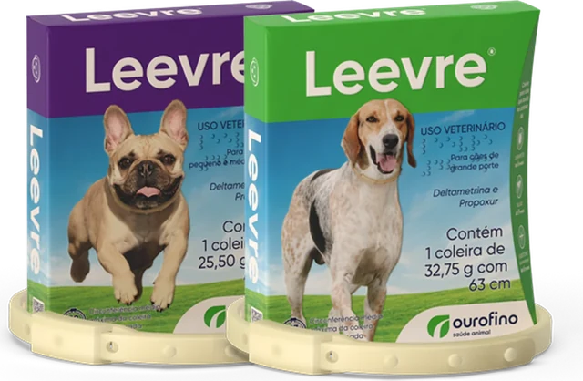
LeevreCãesherói
C
Coleira com deltametrina e propoxur, em 48 cm e 63 cm.
B
Ajuda no controle de pulga e carrapato do cão.
V
Repele o mosquito que transmite a leishmaniose visceral canina.
Guia de execução no PDV9 · Os 10 de cada categoria
categoria
Suplementos: a linha Snacks
Todos da linha são tabletes mastigáveis. O cão come como petisco, e o tutor não precisa disfarçar o suplemento na comida.
10produtos · página 1 de 2
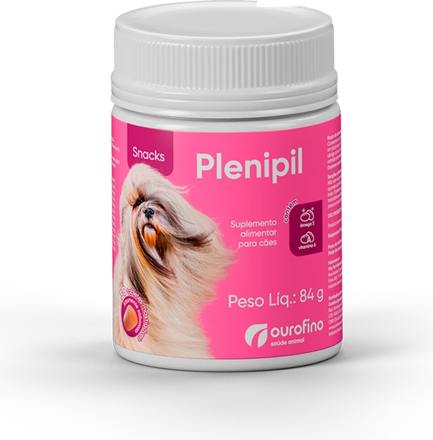
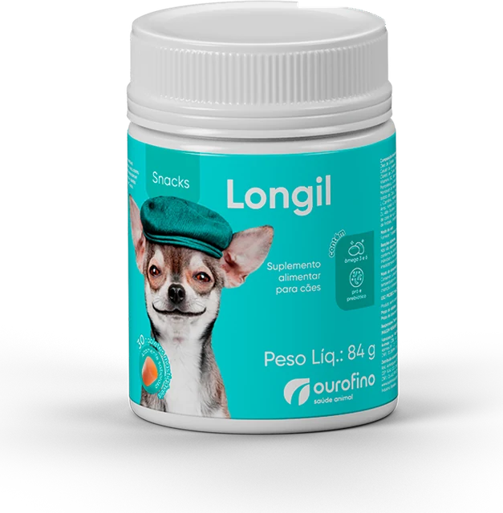
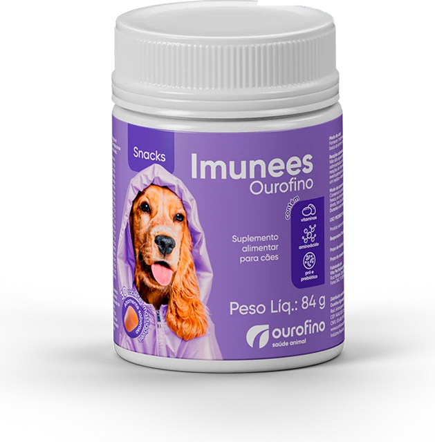
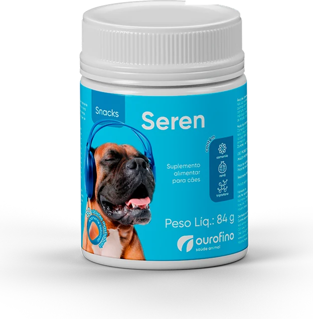
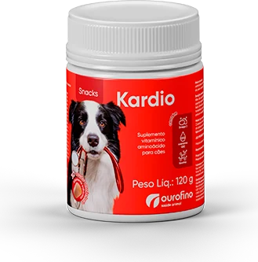
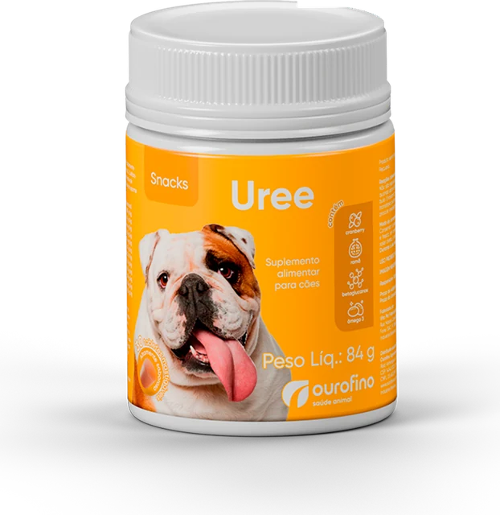
Plenipil SnacksCãesherói
C
Tablete com ômega 3 (EPA e DHA), vitamina A, biotina e selênio.
B
Nutrientes para a pele e o pelo do cão.
V
Serve para cães de todas as idades e fases da vida.
Longil SnacksCães idosos
C
Tablete com vitaminas, minerais, colágeno e ômegas de linhaça e salmão.
B
Suporte nutricional para o cão na fase idosa.
V
Feito para cães com mais de 7 anos, com probiótico e prebiótico.
Imunees SnacksCães
C
Tablete com aminoácidos, vitaminas C e D3, betaglucanas e MOS.
B
Complementa a nutrição do cão em todas as fases da vida.
V
Traz também probióticos e as vitaminas A e E.
Seren SnacksCães
C
Tablete com L-triptofano, magnésio e romã.
B
Suporte nutricional para todas as idades e fases da vida.
V
Leva extratos de valeriana e de camomila.
Kardio SnacksCães
C
Tablete com coenzima Q10, taurina e L-carnitina.
B
Auxílio nutricional em todas as fases da vida.
V
Leva também óleo de peixe e vitaminas do complexo B.
Uree SnacksCães
C
Tablete com cranberry (arando), romã e glicosamina.
B
Melhora nutricional em todas as fases da vida.
V
Leva também betaglucanos, ômega 3 e vitamina A.
Suplementos · página 2 de 2categoria
Suplementos: articulação, vitaminas e probióticos
Produto
CCaracterística
BBenefício
VVantagem
Condromax PetCães e gatos
Tablete palatável com condroitina, glicosamina e os minerais cobre, manganês e zinco.
Suplementa o animal que se exercita muito ou está em fase de crescimento.
Para cães e gatos, em caixa de 30 ou de 90 tabletes.
AtiviCães e gatos
Comprimido com colágeno tipo II não desnaturado (UC-II®) e minerais.
Ajuda a manter a função das articulações, com mais mobilidade e atividade física.
O UC-II® é fabricado em baixa temperatura, que mantém o colágeno íntegro.
Metacell PetCães, gatos, aves e roedores
Suplemento líquido de vitaminas e minerais, com ferro.
Repõe nutrientes na recuperação, na gestação e na lactação.
Atende cães, gatos, aves e pequenos roedores, e tem versão Snacks para cães.
Biocanis PROCães e gatos
Probióticos com vitamina E, em seringa de 14 g.
Contribui para o equilíbrio nutricional de cães e gatos.
Três probióticos diferentes na mesma seringa.
Também na linha: Seren em pasta (cães e gatos), Rennaiz Snacks, Metacell Pet Snacks, Energy Pet e Biocanis.
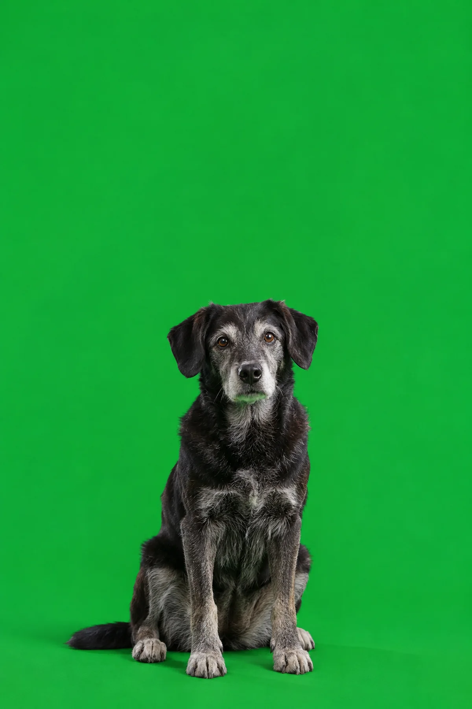
Fig. 9.4 Cão de focinho grisalho: o público do Longil Snacks, do Condromax Pet e do Ativi.
Guia de execução no PDV9 · Os 10 de cada categoria
categoria
Medicamentos: inflamação e infecção
Medicamento sai com orientação do veterinário. A ficha serve para você reconhecer o produto e atender a receita certa.
uso com orientação doveterináriomedicamentos · 10 produtos
1Anti-inflamatórios
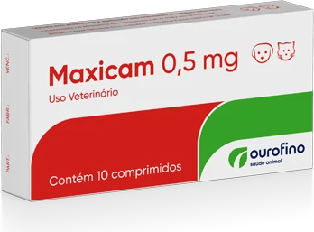
MaxicamCães e gatoscom receita
C
Comprimido de meloxicam, anti-inflamatório não esteroide.
B
Controla a dor e a inflamação de cães e gatos.
V
Maxicam é a marca pioneira em meloxicam no Brasil.
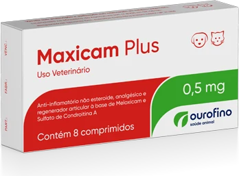
Maxicam PlusCães e gatoscom receita
C
Comprimido que associa meloxicam e sulfato de condroitina A.
B
Controla a dor e a inflamação das osteoartrites.
V
Associação única de anti-inflamatório com condroprotetor.
PredidermCãescom receita
C
Comprimido de prednisolona, anti-inflamatório esteroide.
B
Trata processos inflamatórios e entra também como antialérgico.
V
Retém menos sódio e água que o cortisol.
2Antibióticos
CelesporinCães e gatoscom receita
C
Comprimido de cefalexina, antibiótico cefalosporínico.
B
Trata infecções de pele de cães e gatos.
V
Amplo espectro de ação, em 150 mg e 600 mg.
Doxifin TabsCães e gatoscom receita
C
Comprimido palatável de doxiciclina.
B
O animal recebe direto da mão ou com a comida, sem jejum.
V
Antibiótico de amplo espectro em versão palatável.
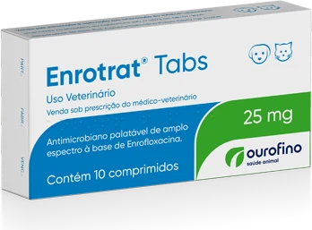
Enrotrat TabsCães e gatoscom receita
C
Comprimido palatável de enrofloxacina.
B
Trata infecções bacterianas de cães e gatos.
V
Rápida absorção, com três apresentações por faixa de peso.
Guia de execução no PDV9 · Os 10 de cada categoria
categoria
Medicamentos: ouvido e pele
Otológicos
AurigenCãescom receita
C
Pomada antibacteriana, antifúngica e anti-inflamatória para o ouvido.
B
Trata otites agudas ou crônicas causadas por bactérias ou fungos.
V
Vem em bisnaga com cânula otológica.
AuritopCães e gatoscom receita
C
Produto otológico de uso tópico, em embalagem de 15 g.
B
Trata otites agudas e crônicas causadas por fungos ou bactérias.
V
Serve para cães e para gatos.
Dermatológicos
DermotratCães e gatoscom receita
C
Antibacteriano, antifúngico e anti-inflamatório de uso na pele.
B
Trata infecções de pele, como dermatite úmida e piodermites.
V
Duas formas: aerosol de 110 mL e bisnaga de 20 g.
RegepilCães e gatoscom receita
C
Cicatrizante de uso tópico com ketanserina e asiaticosídeo.
B
Estimula a cicatrização de feridas.
V
Indicado também para feridas crônicas e de difícil cicatrização.
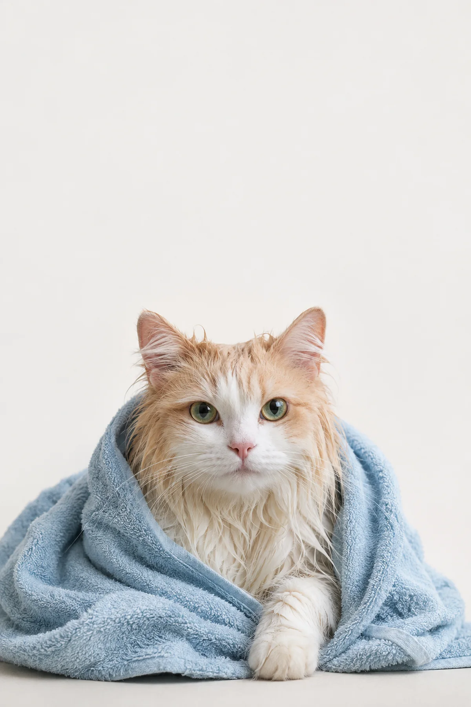
Fig. 9.7 Depois do banho com Bris, o spray e o sérum mantêm a hidratação.
categoria
Cuidados: pele, pelos e ouvidos
05produtos
Pele e pelos: a linha Bris em três passos
1no banho
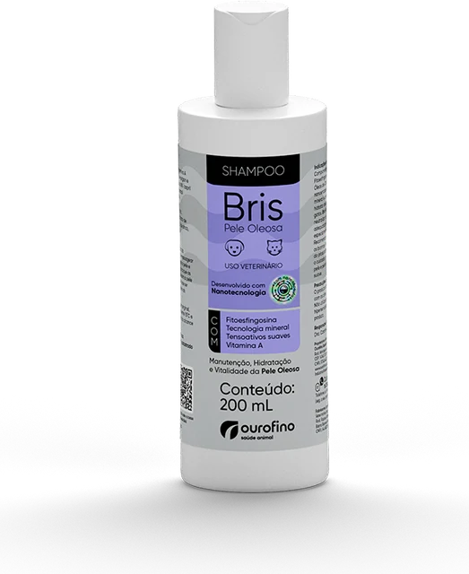
Bris ShampooCães e gatos
C
Shampoo com fitoesfingosina e vitaminas nanoencapsuladas, em versão pele seca e pele oleosa.
B
Limpa e hidrata a pele e o pelo no banho.
V
Abre o cuidado da linha Bris, que segue com spray e sérum da mesma versão.
2depois do banho
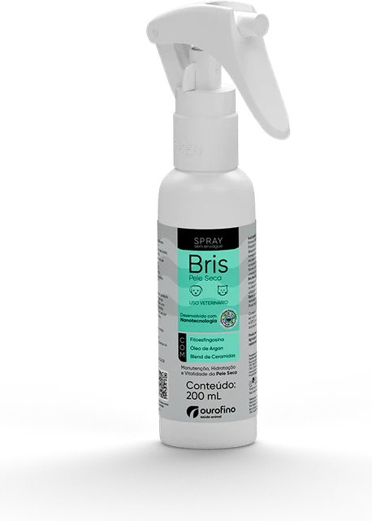
Bris SprayCães e gatos
C
Spray leve e não oleoso com fitoesfingosina e óleos nanoencapsulados.
B
Prolonga a limpeza e renova a hidratação do banho.
V
Tem versão para pele seca e para pele oleosa.
3para finalizar
Bris SérumCães e gatos
C
Sérum com ceramidas, fitoesfingosina e ômegas de óleos vegetais.
B
Desodoriza os pelos e hidrata a pele em profundidade.
V
Indicado para todos os tipos de pele, em especial as secas e sensíveis.
Ouvidos
Limp & HidratCães e gatos
C
Solução para a limpeza de rotina dos ouvidos.
B
Tira o excesso de cera e oleosidade sem irritar, e hidrata a pele.
V
Sem corantes e sem essências, bom para animais sensíveis.
Limp & Hidrat PlusCães e gatos
C
Solução de pH neutro para limpar e higienizar o conduto auditivo.
B
Remove cera e secreções sem irritar, e hidrata a pele.
V
Faz limpeza e higienização no mesmo produto.
Fig. 9.8 Piso limpo e sem cheiro: o que o tutor e a loja querem do Herbalvet T.A. e do EnziClim.
categoria
Desinfecção
02produtos
Herbalvet T.A.Ambienteherói
CCaracterística
Desinfetante bactericida, fungicida, protozoaricida e viricida, com ação desodorizante.
BBenefício
Limpa e tira o cheiro de piso, paredes, banho e tosa, canil e gatil.
VVantagem
Biodegradável e não corrosivo, usado em clínicas e hospitais veterinários.
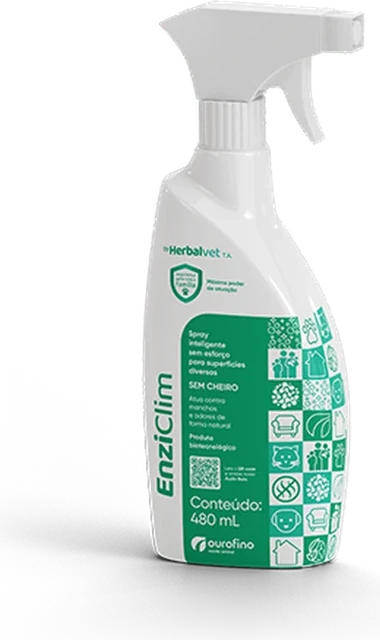
EnziClimAmbienteherói
CCaracterística
Solução com microrganismos vivos.
BBenefício
Age contra odor e mancha de urina, fezes e vômito.
VVantagem
Ação natural, em frascos de 220 mL e 480 mL.
10Capítulo 10O produto3 min de leitura
a prateleira
Prateleira ideal
Cada loja tem um espaço diferente, e um desenho fixo não cabe em todas. Estas cinco regras funcionam em qualquer farmácia de petshop.
Guia de execução no PDV10 · Prateleira ideal
uma semente
Pense na categoria inteira
Categoria é o grupo de produtos que resolve a mesma necessidade do pet, de todas as marcas. Antipulgas é uma categoria. Vermífugo é outra.
Gerenciar a categoria é arrumar esse grupo do jeito que o tutor procura: primeiro pelo problema do pet, depois pela marca. Quando a categoria vende, a Ourofino vende junto.
Como falar disso na loja
Com o balconistaonde fica cada produto e a frase do CBV.
Com o gerente ou donoburaco na prateleira, reposição e a venda da categoria inteira.
Com o tutorquem atende é a loja. Você deixa a prateleira pronta para ele achar sozinho.
Na prática. Comece pela primeira regra da prateleira ideal, duas páginas adiante: agrupe por necessidade.
O tutor ganha
Acha a marca que já usa sem precisar perguntar.
Compara tamanhos e apresentações lado a lado.
Vê a prateleira arrumada e confia na loja.
A loja ganha
Vê o buraco antes de o produto acabar.
Repõe mais rápido, porque cada produto tem lugar certo.
Segura a venda: de cada 100 compradores que não acham o produto, 31 vão a outra loja (capítulo 3).
a prateleira ideal
A farmácia vista de longe
Na prateleira ideal, o tutor acha o que procura sem perguntar. A proteção do cão fica num bloco, a do gato em outro. O que mais sai está na altura dos olhos, e cada bloco da Ourofino encosta no bloco da concorrente que faz a mesma coisa.
Use a foto como referência de ordem. Na sua loja, adapte ao número de prateleiras e ao que a loja tem em estoque.
Fig. 10.2 Os pontos mostram o que cada bloco resolve.
AntipulgasWellPET e Leevre juntosConcorrente ao ladona mesma alturaVermífugosTop Dog por faixa de pesoSuplementospele e pelo juntos
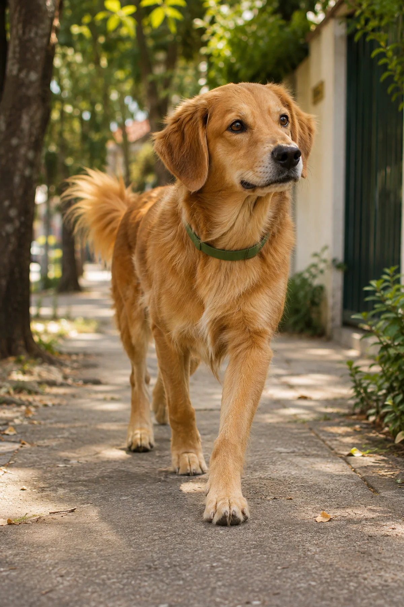
cinco regras
As cinco regras da prateleira ideal
1Agrupe por necessidade
Produtos para o mesmo problema do animal ficam juntos, como tudo o que protege o cão de pulga e carrapato.
2Zona quente para o que mais sai
A faixa na altura dos olhos fica com o que o tutor mais procura e com a campanha do momento.
3De cima para baixo
Ocupe primeiro as prateleiras de cima e do meio. Atrás do balcão, o que fica baixo some da vista.
4Ao lado da concorrente
O bloco da Ourofino encosta no da outra marca para o mesmo problema, na mesma altura: o tutor vê os dois.
5Cão de um lado, gato do outro
Separe as espécies dentro de cada bloco. O balconista acha mais rápido, e o tutor não leva o produto errado.
Guia de execução no PDVPara fechar
para fechar
Considerações finais
Se você levar uma coisa só deste guia, leve a ordem da visita:
prepara antes, se apresenta, olha, fotografa, corrige o básico e só então faz o resto. Ela funciona em loja grande, em clínica pequena e no dia corrido.
Quando não souber a resposta, diga que vai ver e volte no dia combinado. Eu faço isso até hoje.
Serafinaaté a próxima loja
Guia de execução no PDVPara fechar
Checklist da visita
marcados
Antes
Durante
Depois
Guia de execução no PDVPara fechar
Teste finalPergunta 1 de 10
1. Amanhã você volta a uma loja que visitou há 15 dias. O que faz antes de sair?
Com objetivo, pendências e material certo, você usa melhor o tempo na loja e resolve o que ficou aberto. (Capítulo 1)
2. A loja comprou 12 caixas de Top Dog há dois meses e ainda tem 10 na prateleira de baixo. O que está acontecendo?
Sell-in é a loja comprando. Sell-out é o tutor levando para casa. Produto parado não gira, e a loja não faz pedido novo. (Capítulo 2)
3. Ao repor a prateleira de Top Dog, onde ficam as caixas com a validade mais próxima?
É o FIFO: primeiro que entra, primeiro que sai. A validade mais próxima na frente evita produto vencido na prateleira. (Capítulo 3)
4. Numa clínica com petshop, onde vai o wobbler do Top Dog?
Material trabalha junto do produto que anuncia. Na clínica, quem autoriza é o veterinário responsável, e a porta do consultório não recebe material. (Capítulo 4)
5. Onde você coloca material do Banni 3 fora da farmácia?
Quem compra ração ou areia de gato tem gato em casa. Material de gato nunca vai para a área de cão. (Capítulo 5)
6. Você tem seis frascos de Herbalvet T.A. para a gôndola e para um display novo. A gôndola comporta seis. O que faz?
O ponto extra só existe com o ponto natural cheio. O tutor que vai direto à gôndola não pode encontrar buraco. (Capítulo 6)
7. O gerente pede um desconto maior no WellPET. O que você responde?
Preço e desconto são do time comercial. Você leva o pedido e volta com a resposta no dia combinado. (Capítulo 7)
8. Um tutor pergunta quantos comprimidos de WellPET dar ao cão dele. O que você faz?
Quantidade e uso para um animal específico são assunto do veterinário. Você mostra a embalagem e encaminha. (Capítulo 8)
9. Na ficha do Banni 3, qual destas frases é a vantagem?
A primeira frase diz o que o produto é (característica). A segunda diz o que muda para o gato e o tutor (benefício). A vantagem é o motivo para escolher este produto. (Capítulo 9)
10. A farmácia da clínica tem uma prateleira só. Como você organiza os produtos da Ourofino?
Com pouco espaço, valem as regras um e cinco. O balconista acha rápido, e o tutor não leva o produto errado. (Capítulo 10)
Seu resultado0certas de 10
Errou alguma? A explicação mostra o capítulo do assunto. Leia de novo antes da próxima visita.
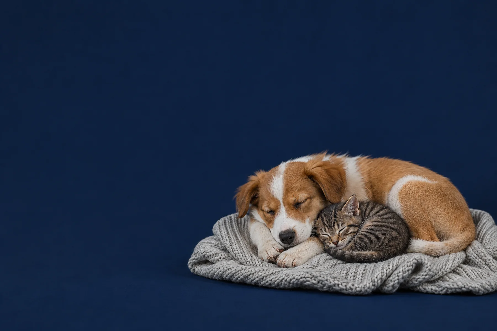
obrigada pela visita
Tá bem cuidado
Agora é com você. Guarde este guia no celular, volte nele quando bater a dúvida e use o checklist em cada visita. A gente se vê na próxima loja.